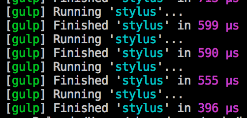

gulp
Intro & How I use gulp
gulp is...
Stream-based build system
Code over configuration
Small, idiomatic Node modules
Really simple, elegant API
Installing gulp
- Install gulp globally:
-
npm install -g gulp - Install gulp in your project devDependencies:
-
npm install --save-dev gulp - Create a gulpfile.js at the root of your project:
-
var gulp = require('gulp'); gulp.task('default', function() { // place code for your default task here }); - Run gulp:
-
gulp
Basic gulpfile
var gulp = require('gulp'),
less = require('gulp-less');
gulp.task('default', function() {
return gulp.src('src/*.less')
.pipe(less())
.pipe(gulp.dest('public/styles'))
});
Run it from the terminal
$ gulp taskname
Streaming Builds
gulp.task('default', function() {
gulp.src('src/*.less') // read from FS
// in memory transforms
.pipe(less()) // hand source to module
.pipe(gulp.dest('public/styles')) // write to FS
});
Streams?
Read the Stream Handbook
by @substack
best part about @gulpjs is that people are writing generic, streaming node modules that have nothing to do w/ gulp except the module name :)
Let's learn the gulp api
It's not too hard
gulp.task
gulp.task('name', ['deps'] ,function(callback) {
return stream | promise;
// or, call callback()
});
gulp.watch
gulp.watch('src/**/*.js', ['test', 'compile']);
gulp.src
returns a readable stream
gulp.src(['src/**/*.js', 'test/spec/**/*.js'])
gulp.dest
returns a "through stream"
gulp.src('src')
.pipe(...)
.pipe(gulp.dest('dist'));
Yes, that means that you can keep on piping!
Think of jQuery piping
task, watch, src, dest
That's it.
But...
How do you run all the tasks sequentially?
wrong
question
That's it?
yep, pretty much
additional resources
Grunt vs gulp (code comparison)*
http://www.shaundunne.com/gulp-is-the-new-black/
*I know nothing about Grunt, so just snagged this from the web
gruntfile
var gruntConfig = function(grunt) {
//This will load in all the grunt plugins that have a grunt- prefix
require('matchdep').filterDev('grunt-*').forEach(grunt.loadNpmTasks);
//Grunt config setup
var cfg = {
watch: {
php: {
files: ['**/*.php'],
options: {
livereload: true
}
},
html: {
files: ['**/*.html'],
options: {
livereload:true
}
},
styl: {
files: ['assets/stylus/*.styl'],
tasks: ['stylus'],
options:{
livereload:true
}
},
js: {
files: ['assets/js/*.js'],
options:{
livereload:true
}
}
},
stylus: {
compile: {
files: {
'assets/css/main.css': 'assets/stylus/main.styl'
}
}
}
};
// End cfg
grunt.initConfig(cfg);
//Tasks
grunt.registerTask('dev', [
'stylus',
'watch'
]);
};
module.exports = gruntConfig;
gulpfile
var gulp = require('gulp');
var stylus = require('gulp-stylus');
var refresh = require('gulp-livereload');
var lr = require('tiny-lr');
var server = lr();
gulp.task('stylus', function(){
gulp.src('assets/stylus/main.styl')
.pipe(stylus({
use: ['nib'],
compress: true
}))
.pipe(gulp.dest('assets/css'))
.pipe(refresh(server))
});
gulp.task('js', function(){
gulp.src('assets/js/*.js')
.pipe(refresh(server));
})
gulp.task('php', function(){
gulp.src('*.php')
.pipe(refresh(server));
})
gulp.task('livereload', function(){
server.listen(35729, function(err){
if(err) return console.log(err);
});
});
gulp.task('dev', function(){
gulp.run('livereload', 'stylus');
gulp.watch('assets/stylus/**' , function(ev){
gulp.run('stylus')
});
gulp.watch('assets/js/*.js', function(ev){
gulp.run('js')
});
gulp.watch('*.php', function(ev){
gulp.run('php')
});
});
Ok, so big deal?
Why I chose to use gulp
It is fast
most of the time, tasks complete in microseconds!
It is easy to use
- flexible
- easy learning curve
- expandable - lot of existing plugins, makes it easy to integrate and accomplish tasks
examples
Thank you!